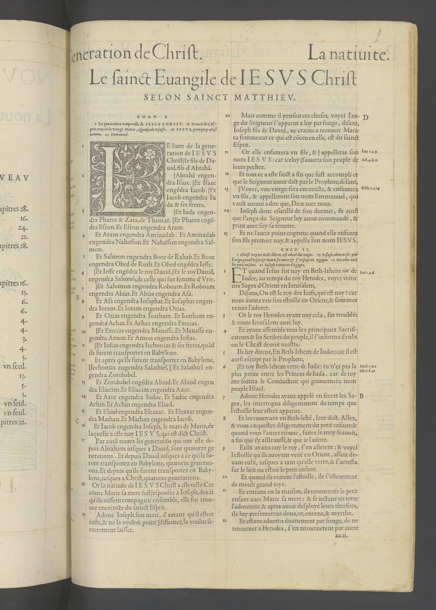

Le ſainct Euangile de I E S V S Chriſt
SELON SAINCT MATTHIEV.
CHAP. I.
1 La generation temporelle de I E S V S C H R I S T
,conceu du S. Eſprit, nay de la vierge Marie, eſpouſe
de Ioſeph. 21 I E S V S, pourquoy ainſi nomme.
23 Emmanuel.
E luire de la gene- ration de I E S V S Chriſt ‖ le fils de Dauid, fils d’Abrahã.
2
‖ Abrahã engendra Iſaac. ‖ Et Ifaac engẽdra Iacob.
‖ Et Iacob engendra Iuda & ſes freres.
3
Et Iuda engendra Pharez & Zara, de Thamar. ‖
Et Pharez engẽdra Eſron. Et Eſron engendra Aram.
4
Et Aram engendra Aminadab. Et Aminadab engendra
Nahaſſon. Et Nahaſſon engendra Salmon.
5
Et Salmon engendra Booz de Rahab. Et Booz
engendra Obed de Ruth. Et Obed engẽdra Ieffe.
6
‖ Et Ieſſe engẽdra le roy Dauid. ‖ Et le roy Dauid, engendra Salomõ, de celle qui fut femme d’Vrie.
7
‖ Et Salomon engendra Roboam. Et Roboam engendra Abias. Et Abias engendra Aſa.
8
Et Aſa engendra Ioſaphat. Et Ioſaphat engendra Ioram. Et Ioram engendra Ozias.
9
Et Ozias engendra Ioatham. Et Ioatham engendra Achaz. Et Achaz engendra Ezecias.
10
‖ Et Ezecias engendra Manaſſe. Et Manaſſe engendra Amon.
Et Amon engendra Ioſias.
11
‖ Et Ioſias engendra Iechonias & ſes freres, quãd
ils furent tranſportez en Babylone.
12
Et apres qu’ils furent tranſportez en Babylone,
‖ Iechonias engendra Salathiel, ‖ Et Salathiel engendra Zorobabel.
13
Et Zorobabel engẽdra Abiud. Et Abiud engendra Eliacim.
Et Eliacim engendra Azor.
14
Et Azor engendra Sadoc. Et Sadoc engendra Achin.
Et Achin engendra Eliud.
15
Et Eliud engendra Eleazar. Et Eleazar engendra Mathan.
Et Mathan engendra Iacob.
16
Et Iacob engendra Ioſeph, le mari de Marie, de laquelle
a eſte nay I E S V S, qui eſt dict Chriſt.
17
Par ainſi toutes les generatiõs qui ont eſte depuis Abraham iuſques a Dauid, ſont quatorze generations. Et depuis Dauid iuſques a ce qu’ils furent tranſportez en Babylone, quatorze generations. Et depuis qu’ils furent tranſportez en Babylone, iuſques a Chriſt, quatorze generations.
18
Or la natiuite de I E S V S Chriſt a eſte telle :
Car cõme Marie ſa mere fuſt ‖ eſpouſee a Ioſeph, deuãt
qu’ils euſſent compagnie enſemble, elle fut trouuee
enceincte du ſainct Eſprit.
19
Adonc Ioſeph ſon mari, d’autant qu’il eſtoit iuſte,
& ne la vouloit point ‖ diffamer, la voulut
ſecretement laiſſer.
20
Mais comme il penſoit ces choſes, voyci l’ange du Seigneur ſ'apparut a luy par ſonge, diſant, Ioſeph fils de Dauid, ne crains a receuoir Marie ta femme : car ce qui eſt cõceu
en elle, eſt du ſainct Eſprit.
21
Or elle enfantera vn fils, & ‖ appelleras ſon nom
I E S V S : car iceluy ‖ ſauuera ſon peuple de
leurs pechez.
22
Et tout ce a eſte faict a fin que fuſt accompli ce que le Seigneur auoit dict par le Prophete, diſant,
23
‖ Voyci, vne vierge ſera enceincte, & enfantera vn fils, & appelleront ſon nom Emmanuel, qui vault autant a dire que,
Dieu auec nous.
24
Ioſeph donc eſueillé de ſon dormir, fit ainſi
que l’ange du Seigneur luy auoit commandé, & print auec ſoy
ſa femme.
25
Et ne l’auoit point cogneue quand elle enfanta ſon fils
premier nay, & appella ſon nom I E S V S.
CHAP. II.
1 Chrisſt nay en Beth-lehem, eſt adoré des sages. 13
Ioſeph admoneſté par l'ange prend Ieſus & Marie ſa mere
& ſ’enfuyt en Egypte. 16 Herodes occit les petits enfans.
21 Ioſeph retourne d'Egypte.
ET quand Ieſus fut nay en Beth-lehem cite de Iudee,
au temps du roy Herodes, voyci venir des Sages d’Orient
en Ieruſalem,
2
Diſans, Ou eſt le roy des Iuifs, qui eſt nay ? car nous
auons veu ſon eſtoille en Orient, & ſommes venus l’adorer.
3
Or le roy Herodes ayant ouy cela, fut troublé : & toute Ieruſalem auec luy.
4
Et ayant aſſemble tous les principaux Sacrificateurs & les Scribes du peuple, il ſ’informa d’eulx ou le Chriſt deuoit naiſtre.
5
Ils luy dirent, En Beth-lehem de Iudee : car il eſt ainſi eſcript par le Prophete,
6
‖ Et toy Beth-lehem terre de Iuda : tu n’es pas la plus petite entre les Princes de Iuda. car de toy me ſortira le Conducteur qui gouuernera mon peuple Iſrael.
7
Adonc Herodes ayant appelé en ſecret les Sages,
les interrogua diligemment du temps que l’eſtoille
leur eſtoit apparue.
8
Et les enuoyant en Beth-lehẽ, leur dict, Allez,
& vous enqueſtez diligemment du petit enfant : &
quand vous l’aurez trouue, faites le moy ſcauoir,
a fin que i’y aille auſſi, & que ie l’adore.
9
Eulx ayans ouy le roy, ſ’en allèrent : & voyci l’eſtoille qu'ils auoyent veuë en Orient, alloit
deuant eulx, iuſques a tant qu’elle veint, &
ſ’arreſta ſur le lieu ou eſtoit le petit enfant.
10
Et quand ils veirent l’eſtoille, ils ſ’eſiouyrent
de moult grand ioye.
11
Et entrans en la maiſon, ils trouuerent le petit
enfant auec Marie ſa mere : & ſe iectans en terre
l’adorerent. & apres auoir deſployé leurs threſors,
ils luy preſenterent dons, or, encens, & myrrhe.
12
Et eſtans aduertis diuinement par ſonge, de ne
retourner a Herodes, ſ’en retournerent par autre
